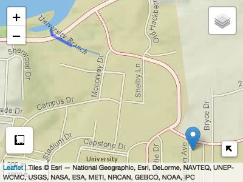

Basic use
Lets find the historic flows nearest my home:
pt = AOI::geocode('University of Alabama', pt = TRUE) comid = discover_comid(pt) nhd = HydroData::findNHD(comid = comid) #> Returned object contains: 1 nhd flowlines aoi_map(pt, returnMap = TRUE) %>% addPolylines(data = nhd$nhd) #> Warning: sf layer has inconsistent datum (+proj=longlat +ellps=GRS80 +towgs84=0.0,0.0,0.0,0.0,0.0,0.0,0.0 +no_defs). #> Need '+proj=longlat +datum=WGS84'

out = readNWMdata(comid = comid) head(out) #> # A tibble: 6 x 4 #> model comid time_utc flow #> <fct> <int> <dttm> <dbl> #> 1 NWM20 18228721 1993-01-01 00:00:00 0 #> 2 NWM20 18228721 1993-01-01 01:00:00 0 #> 3 NWM20 18228721 1993-01-01 02:00:00 0 #> 4 NWM20 18228721 1993-01-01 03:00:00 0 #> 5 NWM20 18228721 1993-01-01 04:00:00 0 #> 6 NWM20 18228721 1993-01-01 05:00:00 0 dim(out) #> [1] 219144 4
sub = readNWMdata(comid = comid, startDate = "2017-01-01", endDate = "2017-12-31") head(sub) #> # A tibble: 6 x 4 #> model comid time_utc flow #> <fct> <int> <dttm> <dbl> #> 1 NWM20 18228721 2017-01-01 00:00:00 0 #> 2 NWM20 18228721 2017-01-01 01:00:00 0 #> 3 NWM20 18228721 2017-01-01 02:00:00 0 #> 4 NWM20 18228721 2017-01-01 03:00:00 0 #> 5 NWM20 18228721 2017-01-01 04:00:00 0 #> 6 NWM20 18228721 2017-01-01 05:00:00 0 dim(sub) #> [1] 8760 4 sub_summary = sub %>% aggregate_monthly(FUN = c("max", "mean", "min")) sub = reshape2::melt(sub_summary, c('comid', "time_utc")) ggplot(data = sub, aes(x = time_utc, y = value, color = variable)) + geom_line() + labs(title = paste0("2017 Monthly Mean COMID: ", comid), x = "Date", y = "Streamflow (cms)", color = "Aggragation") + theme_bw()

Support:
This effort is supported by the Consortium of Universities for the Advancement of Hydrologic Science, Inc. under the HydroInformatics Fellowship. See program here